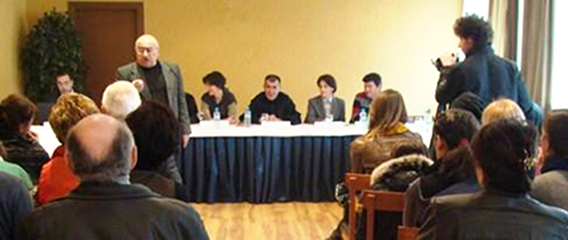

MЫ ДОЛЖНЫ ВНЕСТИ СВОЙ ВКЛАД В БУДУЩЕЕ
Интервью
с профессором
Ниязи Мехти,
автором
и руководителем
программы
Южно-Кавказских
гражданских
дебатов
по проблемам
демократии
и гендера.
Господин Ниязи, как родилась идея проведения гражданских слушаний и символических судов в южнокавказском формате?
Если память мне не изменяет, в 2000 году, когда в рамках своего исследования по сложным ситуациям в культуре я работал в библиотеке Университета Упсалы, там натолкнулся на статью об Интер-Американском Суде по Правам Человека. В моем сознании тут же сработал механизм умозаключения: значит, Европейский Суд по Правам Человека может «клонироваться» по регионам.
Отсюда возникло предположение, что в далеком будущем может возникнуть и Кавказский Суд по Правам Человека. Однако до этого умозаключения мы уже имели опыт проведения судов. В рамках проектов Символического Конституционного Суда нами были организованы разные процессы в ролевых играх. Признаться, когда мы в 1998 году пришли к идее символического суда, мы тогда еще не знали, что в России по каналу НТВ показывают инсценированные суды. Однако даже в том случае, если мы не можем доказать, что не «имитировали» их форму, в одном все же можем показать нашу оригинальность.
До 2005 года в наших судах мы почти что не разбирали конкретных случаев нарушения Прав Человека. Но зато организовывали суды над азербайджанскими законами с точки зрения критерий Прав Человека. Потом такие суды трансформировались в программу, где точкой измерения стала реальность законов. В последующем, мы в течение года организовали Символические Анти-Коррупционные Суды, где доказывали как тот, или иной закон порождает коррупцию.
Таким образом, до 2000 года мы имели опыт в организации символических судов по Правам Человека. Когда Европейский и Интер-Американский Суды по Правам Человека в плане замыслов скрестились с этим опытом, появилась идея создания Кавказского Символического Суда по Правам Человека. Мы подумали так: если реальный Кавказский Суд по Правам Человека дело «утопического» будущего, то мы хотя бы сейчас должны внести свой вклад в это будущее. Так, 2-3 года тому назад возникла идея об учреждении Кавказского Символического Суда по Правам Человека. К счастью, представители National Endowment for Democracy (USA) положительно оценили перспективу этого замысла и поддержали наши программы, которые должны были приблизить нас к их реализации. Так, мы начали проводить Южно-Кавказские Гражданские Слушания. Кстати, у нас слушания и суды различаются между собой тем, что в слушаниях предметом дебатов становятся острые проблемы демократии, а в судах - законы, правовые проблемы.
До сих пор я в «жанре» Истории Идей излагал то, каким образом у нас сложилась мысль о Кавказском Символическом Суде по Правам Человека. Однако эта идея не могла воплотиться в жизнь без поддержки Мананы Галуашвили, Луизы Погосян и Георгия Ваняна. Они и их организации стали нашими кавказскими партнерами. А их авторитет и человеческие качества сделали наше сотрудничество увлекательным и приятным.
Уже прошло несколько слушаний и один символический суд. Насколько Вам удалось осуществить задуманное, с какими трудностями пришлось столкнуться и как будет дальше развиваться проект?
С количественной точки зрения мы осуществили все задуманное. С точки зрения качества можно высоко оценить выступления в роли истца или ответчика Лелы Гаприндашвили, Георгия Сиамашвили, Проф. Али Абасова, Проф. Рахмана Бадалова, Тогрула Джуварлы – все они интеллектуалы, профессионалы каждый в своей отрасли и известны в кругах гражданских активистов нашего региона. Однако с точки зрения исполнительской техники я не могу сказать, что все они были виртуозами. Наши слушания и суды требуют определенной театральности, ораторских способностей, чтобы зрители до конца с интересом следили за ходом мыслей дебатирующих. Но это не всем и не всегда удавалось. Была еще одна проблема: иногда наши участники в силу занятости, или просто, из-за необязательности характера задерживали текущую программу. Очень трудно на расстоянии согласовывать работу и время представителей трех стран. А вообще-то есть уйма проблем, а, значит, и трудностей. К ним относится и поиск эффективных тем, и как сделать, чтобы проигрыш истца, или ответчика не воспринимался как проигрыш нации, которую они представляют.
Почему выбрана именно интерактивная методика проведения слушаний и судов? Ведь гораздо легче «работать в кабинетах» и выводить результаты в виде статей, исследований, брошюр по отдельным темам, как это делается обычно.
Чтобы ответить на ваш вопрос, с вашего позволения, я прочту инструкцию, которая обычно распространяется между новыми участниками. Там говорится: для раскрытия значения Гражданских Слушаний, следует отличать их от других форм дебатов. В отличие от «Круглых Столов» и разных форм научных конференций и форумов, Слушания имеют следующие особенности:
1. Они предназначены не для научного сообщества, а для обычной публики, или гражданского сектора. Соответственно, Слушания должны быть увлекательными, зрелищными.
2. Язык дебатов и термины, используемые в них, должны быть понятными для любой аудитории.
3. В отличие от научных дебатов, в Слушаниях принцип соревновательности носит открытый характер. Но в этой соревновательности главное - соревнование идей, а не личностей.
4. Взаимные обвинения и некоторое нетолерантное отношение к оппоненту допускается жанровыми правилами Слушаний.
5. В Слушаниях признается нормой поиск виновного или ответственного за ту или иную позицию. Поэтому возможна ситуация, когда какой-нибудь автор скандальной статьи, человек, выступающий с эпатажных позиций, или же, глашатай антидемократических заявлений приглашается на Слушания и отвечает на вопросы комиссии.
6. Другая форма Слушаний заключается в том, что они протекают в виде спора Истца и Ответчика.
7. В отличие от конференций и «Круглых столов» в Слушаниях допускаются многочисленные вопросы с мест (как на пресс-конференциях).
Как выбираются темы слушаний и судов?
Иногда, как координатор программы, тему выбираю я. Так, тема суда по грузинской жалобе в Гаагский Трибунал пришла мне в голову после Российской агрессии в Грузии. Но темы предыдущих слушаний подсказали разные участники.
Следующий вопрос хочу задать, перефразировав одну из реплик читателей протоколов слушаний: Не думаете ли Вы, что на фоне того, что сейчас происходит в нашем регионе, подобные обсуждения – лишь переливание из пустого в порожнее и в лучшем случае – «забава для интеллектуалов»?
Я не питаю иллюзии относительно влияния нашей деятельности как гражданских активистов и гражданских организаций. Единственный веский аргумент в пользу нашей работы тот, что без нее было бы еще хуже. Продукты наших дискуссий, наших статей как семена – они могут дать свои «ростки» в сознании отдельных людей. Но если это - сознание журналиста, политика или писателя, тогда влияние «ростка» выйдет за пределы отдельного человека.
Но ваш вопрос подсказал мне интересную тему: какие - подобно излучению, гравитации - неявные, то есть некрикливые воздействия может иметь гражданское движение и может ли оно их иметь?
Луиза Погосян
15-03-09
Ереван - Баку
Господин Ниязи, как родилась идея проведения гражданских слушаний и символических судов в южнокавказском формате?
Если память мне не изменяет, в 2000 году, когда в рамках своего исследования по сложным ситуациям в культуре я работал в библиотеке Университета Упсалы, там натолкнулся на статью об Интер-Американском Суде по Правам Человека. В моем сознании тут же сработал механизм умозаключения: значит, Европейский Суд по Правам Человека может «клонироваться» по регионам.
Отсюда возникло предположение, что в далеком будущем может возникнуть и Кавказский Суд по Правам Человека. Однако до этого умозаключения мы уже имели опыт проведения судов. В рамках проектов Символического Конституционного Суда нами были организованы разные процессы в ролевых играх. Признаться, когда мы в 1998 году пришли к идее символического суда, мы тогда еще не знали, что в России по каналу НТВ показывают инсценированные суды. Однако даже в том случае, если мы не можем доказать, что не «имитировали» их форму, в одном все же можем показать нашу оригинальность.
До 2005 года в наших судах мы почти что не разбирали конкретных случаев нарушения Прав Человека. Но зато организовывали суды над азербайджанскими законами с точки зрения критерий Прав Человека. Потом такие суды трансформировались в программу, где точкой измерения стала реальность законов. В последующем, мы в течение года организовали Символические Анти-Коррупционные Суды, где доказывали как тот, или иной закон порождает коррупцию.
Таким образом, до 2000 года мы имели опыт в организации символических судов по Правам Человека. Когда Европейский и Интер-Американский Суды по Правам Человека в плане замыслов скрестились с этим опытом, появилась идея создания Кавказского Символического Суда по Правам Человека. Мы подумали так: если реальный Кавказский Суд по Правам Человека дело «утопического» будущего, то мы хотя бы сейчас должны внести свой вклад в это будущее. Так, 2-3 года тому назад возникла идея об учреждении Кавказского Символического Суда по Правам Человека. К счастью, представители National Endowment for Democracy (USA) положительно оценили перспективу этого замысла и поддержали наши программы, которые должны были приблизить нас к их реализации. Так, мы начали проводить Южно-Кавказские Гражданские Слушания. Кстати, у нас слушания и суды различаются между собой тем, что в слушаниях предметом дебатов становятся острые проблемы демократии, а в судах - законы, правовые проблемы.
До сих пор я в «жанре» Истории Идей излагал то, каким образом у нас сложилась мысль о Кавказском Символическом Суде по Правам Человека. Однако эта идея не могла воплотиться в жизнь без поддержки Мананы Галуашвили, Луизы Погосян и Георгия Ваняна. Они и их организации стали нашими кавказскими партнерами. А их авторитет и человеческие качества сделали наше сотрудничество увлекательным и приятным.
Уже прошло несколько слушаний и один символический суд. Насколько Вам удалось осуществить задуманное, с какими трудностями пришлось столкнуться и как будет дальше развиваться проект?
С количественной точки зрения мы осуществили все задуманное. С точки зрения качества можно высоко оценить выступления в роли истца или ответчика Лелы Гаприндашвили, Георгия Сиамашвили, Проф. Али Абасова, Проф. Рахмана Бадалова, Тогрула Джуварлы – все они интеллектуалы, профессионалы каждый в своей отрасли и известны в кругах гражданских активистов нашего региона. Однако с точки зрения исполнительской техники я не могу сказать, что все они были виртуозами. Наши слушания и суды требуют определенной театральности, ораторских способностей, чтобы зрители до конца с интересом следили за ходом мыслей дебатирующих. Но это не всем и не всегда удавалось. Была еще одна проблема: иногда наши участники в силу занятости, или просто, из-за необязательности характера задерживали текущую программу. Очень трудно на расстоянии согласовывать работу и время представителей трех стран. А вообще-то есть уйма проблем, а, значит, и трудностей. К ним относится и поиск эффективных тем, и как сделать, чтобы проигрыш истца, или ответчика не воспринимался как проигрыш нации, которую они представляют.
Почему выбрана именно интерактивная методика проведения слушаний и судов? Ведь гораздо легче «работать в кабинетах» и выводить результаты в виде статей, исследований, брошюр по отдельным темам, как это делается обычно.
Чтобы ответить на ваш вопрос, с вашего позволения, я прочту инструкцию, которая обычно распространяется между новыми участниками. Там говорится: для раскрытия значения Гражданских Слушаний, следует отличать их от других форм дебатов. В отличие от «Круглых Столов» и разных форм научных конференций и форумов, Слушания имеют следующие особенности:
1. Они предназначены не для научного сообщества, а для обычной публики, или гражданского сектора. Соответственно, Слушания должны быть увлекательными, зрелищными.
2. Язык дебатов и термины, используемые в них, должны быть понятными для любой аудитории.
3. В отличие от научных дебатов, в Слушаниях принцип соревновательности носит открытый характер. Но в этой соревновательности главное - соревнование идей, а не личностей.
4. Взаимные обвинения и некоторое нетолерантное отношение к оппоненту допускается жанровыми правилами Слушаний.
5. В Слушаниях признается нормой поиск виновного или ответственного за ту или иную позицию. Поэтому возможна ситуация, когда какой-нибудь автор скандальной статьи, человек, выступающий с эпатажных позиций, или же, глашатай антидемократических заявлений приглашается на Слушания и отвечает на вопросы комиссии.
6. Другая форма Слушаний заключается в том, что они протекают в виде спора Истца и Ответчика.
7. В отличие от конференций и «Круглых столов» в Слушаниях допускаются многочисленные вопросы с мест (как на пресс-конференциях).
Как выбираются темы слушаний и судов?
Иногда, как координатор программы, тему выбираю я. Так, тема суда по грузинской жалобе в Гаагский Трибунал пришла мне в голову после Российской агрессии в Грузии. Но темы предыдущих слушаний подсказали разные участники.
Следующий вопрос хочу задать, перефразировав одну из реплик читателей протоколов слушаний: Не думаете ли Вы, что на фоне того, что сейчас происходит в нашем регионе, подобные обсуждения – лишь переливание из пустого в порожнее и в лучшем случае – «забава для интеллектуалов»?
Я не питаю иллюзии относительно влияния нашей деятельности как гражданских активистов и гражданских организаций. Единственный веский аргумент в пользу нашей работы тот, что без нее было бы еще хуже. Продукты наших дискуссий, наших статей как семена – они могут дать свои «ростки» в сознании отдельных людей. Но если это - сознание журналиста, политика или писателя, тогда влияние «ростка» выйдет за пределы отдельного человека.
Но ваш вопрос подсказал мне интересную тему: какие - подобно излучению, гравитации - неявные, то есть некрикливые воздействия может иметь гражданское движение и может ли оно их иметь?
Луиза Погосян
15-03-09
Ереван - Баку
Кавказский Центр Миротворческих Инициатив
© Ассоциация Текали - info@southcaucasus.com